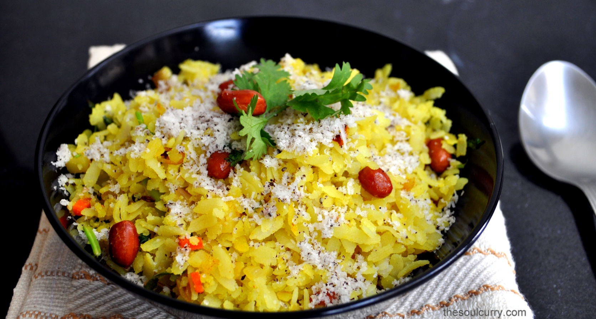
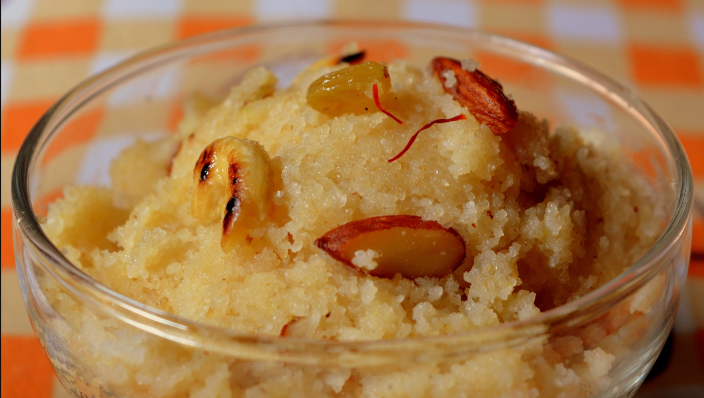
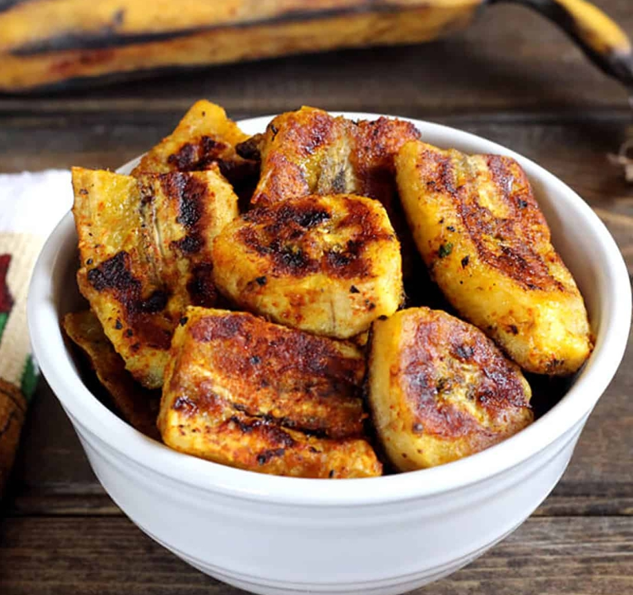

In this fast growing world where everyone is competing in an endless race for jobs, promotion, oppurtunities, money and women(just kidding), people often ignore the importance of a healthy meal which often leads to many long term effects on their health.
To save some time, people often end up eating junk food which is why the obesity rate is increasing exponentially. To learn about the impacts of junk food you can refer to Junk food and your health.
That is why today we are gonna learn recipe of 3 healthy and tasty easy to make indian dishes(coz i'm a hardcore indian food fan).
A classical dish which is so easy to cook that even a beginner can nail it. Perfect for the ones who skip breakfast to reach office on time.
Click on recipe and learn to make this amazing dish.
Again a very common indian dish which just fits on every occassion, one could have it as breakfast, sweet dish after dinner, got some guests and don't know what to serve, halwa is perfect for these kind of scenarios.
Learn the recipe of this versatile dish.
If you're craving for something spicy and crispy, here is a dish which can make you fall in love with it.
Here is the recipe of this crispy and spicy dish.
